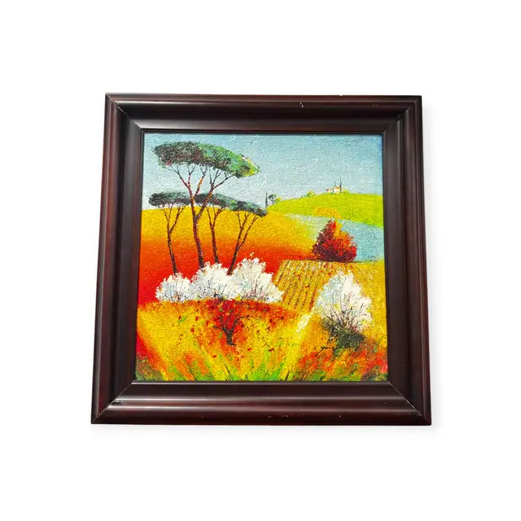

Paintings & Prints
Tuscan Pines Above Blossoming Fields, Framed
· late 20th - early 21st century
Price Upon Request

About the Item
A square canvas built up in exceptionally thick impasto, so heavy that the surface reads almost as relief. Three tall umbrella pines with dark green canopies rise on slender trunks against a pale blue sky; a hilltop village with a small tower sits on the green ridge at the right. Below, the ground breaks into bands of cadmium yellow, orange and vermilion stubble with two mounds of white blossom worked in stiff ridges of pure white paint. Colour is applied wet-in-wet with a knife, unblended, so that every stroke stands proud of the canvas. Medium: oil on canvas, very heavy palette-knife impasto. Condition: no visible issues; impasto ridges intact, no flaking or craquelure observed.
Details
- Creation Year:
- late 20th - early 21st century
- Dimensions:
- Height: 38.5 in (97.79 cm)
Width: 39.0 in (99.06 cm)
outside of frame - Medium:
- oil on canvas, very heavy palette-knife impasto
- Period:
- 21St
- Condition:
- Offered in the condition shown in the photographs.
- Reference Number:
- VO-53
- Documentation:
- no certificate or label photographed